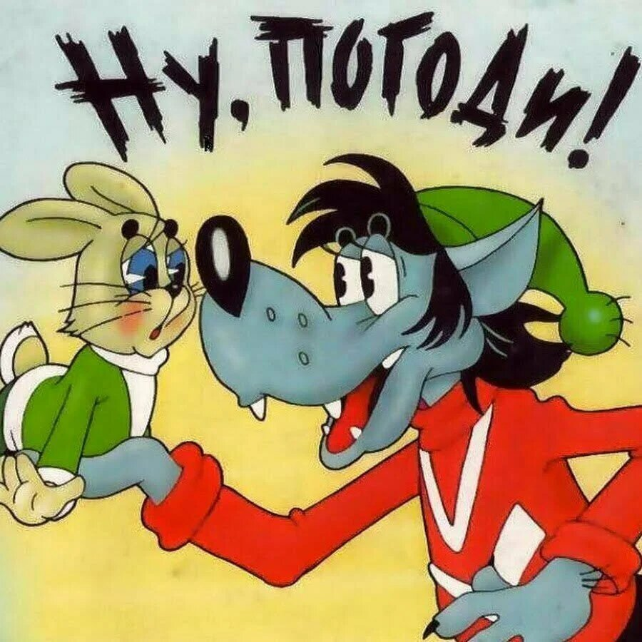
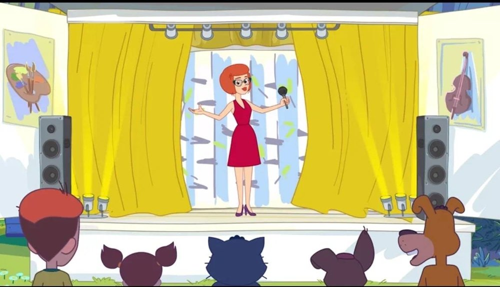
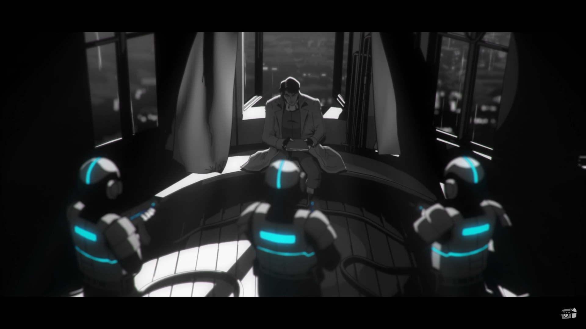

CarCHUBS
Главная
Меню героев
Новости
О нас
Новости
Здесь вы можете найти последние новости мультиплиации.
"Маша и Медведь" собрали 100 млрд просмотров и отметят это спецсерией
Российский мультсериал "Маша и Медведь" побил очередной рекорд - 100 миллиардов просмотров на YouTube. Студия "Анимаккорд" решила поблагодарить преданных поклонников мультфильма по всему миру и готовит спецсерию "100 миллиардов "вокруг света" и обратно!"
Смешарик Нюша стала Моднюшей и снялась в специальной серии для девочек
Одна из главных героинь популярнейшего сериала "Смешарики" Нюша получила собственную специальную серию. А в планах у создателей мультфильма выпустить новый спин-офф проект под названием "Моднюша"

"Союзмультфильм" представил трейлер нового "Ну, погоди!" и рассказал о перезапуске
Герои советских анимационных фильмов, на которых воспитывались миллионы людей в нашей стране и за рубежом, получают новую жизнь. Свою новую анимационную работу - "Ну, погоди! Каникулы" "Союзмультфильм" представит уже в декабре этого года, а сейчас вышел трейлер фильма

В новой серии "Простоквашино" Мама Дяди Федора исполнит новый шлягер
Сегодня - онлайн-премьера нового эпизода мультсериала "Простоквашино". В нем Мама Дяди Федора, исполнительница знаменитого шлягера "Кабы не было зимы", представит зрителям новую песню. Композиция звучит со сцены автоклуба - передвижного "дома культуры"

Киберпанк-экранизация "Преступления и наказания" вышла в России
К 200-летию Федора Достоевского роман "Преступление и наказание" вышел в необычном экспериментальном оформлении - на обложке Соня Мармеладова мчится на байке, а Родион Раскольников размахивает фэнтезийным топором-секирой
Более 300 новых фестивальных мультфильмов можно будет посмотреть онлайн
Начал свою работу юбилейный XV Большой фестиваль мультфильмов. Он проходит в онлайн-формате и продлится до 8 ноября. Для зрителей подготовили программу премьер полнометражных мультфильмов из Франции, Нидерландов, Чехии и Японии